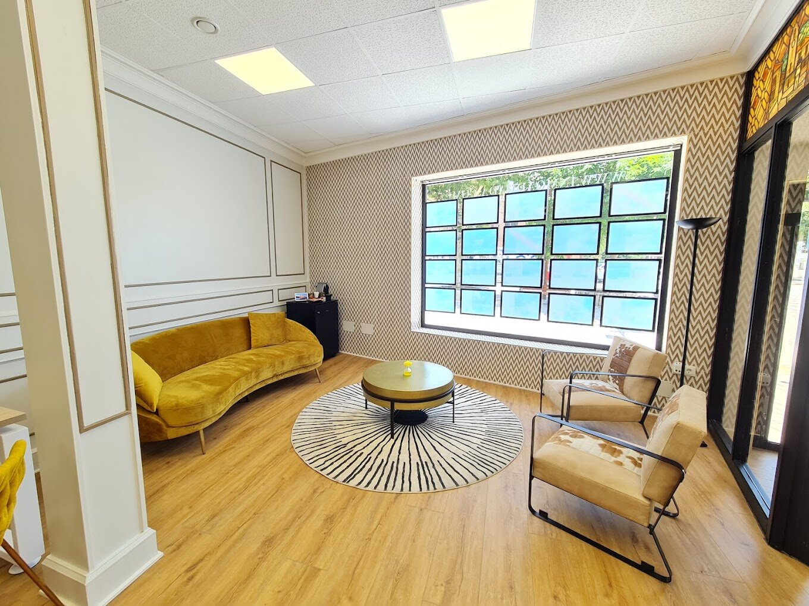

Inmoadrada: Systems & Network Ownership
2022–2026 • Sole systems & network owner, five consecutive summers

Summary
Since 2022, I have been the only person responsible for IT systems, network infrastructure and software integrations at Inmoadrada, a small real estate agency in La Adrada, Spain. What started as a straightforward office network build grew, year over year, alongside the business itself: a full network migration, a document management overhaul, and — starting in 2024 — the infrastructure and integrations behind the company's expansion into short-term rentals across an entire residential building.
Unlike the independent projects elsewhere in this portfolio, this work was carried out for a real business with real users and real continuity requirements: every system had to keep running for years to come, not just for a demo. Support and incident response ran in parallel throughout every year listed below.
Timeline
2022 — Network from scratch
The office had just relocated and needed a network built from the ground up. I chose Ubiquiti's UniFi ecosystem (Network, Access, Protect) over disconnected consumer-grade gear specifically for centralised management — a small team can't sustain time spent administering APs, switches and cameras as separate systems. That decision paid off two years later, when the network needed to scale into the hospitality expansion without a redesign.
2023 — Document management & fleet renewal
The existing file-sharing setup was a flat SMB share with no access control or audit trail, increasingly untenable as document volume grew. I migrated the office to a self-hosted Nextcloud All-in-One instance (open source, chosen for flexibility and to avoid licence and vendor lock-in), adding per-user permissions and versioning, and used the migration as the trigger to define and enforce a historical document archiving policy. In parallel, I led the renewal of the office's computer fleet off Windows 7, phasing it around ongoing business operations so daily work wasn't disrupted.
2024 — Expansion into short-term rentals
The company acquired an entire residential building — six independent rental units plus the office itself, 42 beds in total — and the network had to be redesigned for a mixed office and hospitality environment: a UDM Pro edge gateway, a redundant 10 Gbps SFP+ backbone protected by Spanning Tree, 8 WiFi 7 access points, Cat 6 structured cabling, and VLAN segmentation across office, guest, management and IoT traffic, plus camera coverage.
→ Full write-up: Hospitality Network Expansion
2025 — Smart building layer
Deployed Shelly relays and centralised WiFi-based climate control across the units, and integrated Nuki smart locks with the Lodgify property management system to automate guest check-in and check-out.
2026 — Central orchestration
Built a self-hosted services portal (Homepage) running in an LXC container, brought Home Assistant online as the central automation and monitoring layer tying together locks, climate and relays, and added MagicInfo for on-site digital signage.
The short-term rental business opened in September 2026, and the Nuki–Lodgify check-in/check-out integration has since processed several guest check-ins successfully in production.